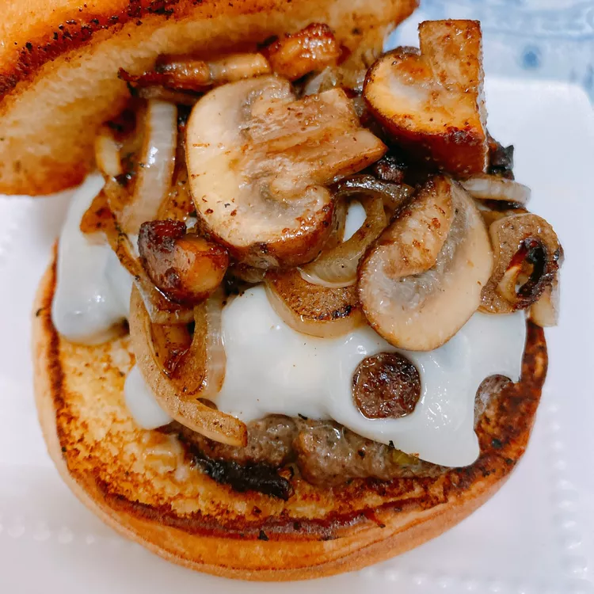

Smash Burger

Description: Onion burgers are one of America's greatest regional renditions, but be warned--these are diner style, and prepare for those drops of grease, but don't let it scare you.
They're so craveable, you may want to eat a second! You do not want to use anything under an 80/20 fat ratio. If you do, they won't be good.
Macros
Calories: 569 Fat: 33g Carbs 31g Protein 36g
Ingredients
- 2 tablespoons salted butter
- 1 tablespoon olive oil
- 1 large onion, very thinly sliced
- ½ teaspoon granulated garlic
- 1 pound 85% lean ground beef
- ½ teaspoon salt
- 1 teaspoon Hamburger Seasoning
- ½ cup sliced portobello mushrooms
- ground black pepper to taste
- 4 slices Swiss cheese
- 4 rolls rolls, hamburger, white, enriched, plain
Steps
- Heat a skillet over medium heat. Add butter and oil; heat until butter is melted. Add onion and garlic. Cook until onion is soft and translucent, about 5 minutes.
- Meanwhile, divide ground meat into 4 portions and shape into patties. Season with salt and seasoning.
- Heat a large skillet or flat-top over medium-high heat for a few minutes. Place patties into the hot skillet and smash with a spatula or bacon press.
Hold patties down for 30 seconds, then cover each patty with some of the cooked onion. Cook for 2 minutes. Carefully flip burgers, making sure to scrape the browned
bits off the skillet.
- Press down on the flipped patties to sink the onions into the meat.
- Meanwhile, add sliced mushrooms to the skillet used for the onion and cook until softened, about 5 minutes.
- Season patties with salt and pepper and place a slice of cheese on each. Cook until burgers have reached the desired doneness, 2 to 4 minutes more.
Top each patty with leftover onion and mushrooms and serve on buns.